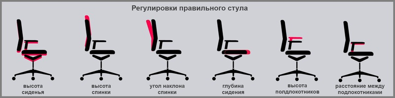
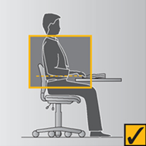
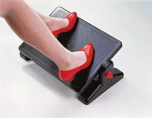
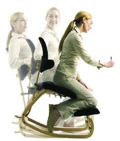

Стул — не менее важная часть рабочего места любого человека, много времени работающего за компьютером в течение дня. Все мы работаем с компьютером и порой не замечаем, на чем же мы сидим. Оказывается наши санитарные правила и нормы (СанПиН 2.2.2/2.4.1340-03) достаточно хорошо описывают удобный эргономичный стул для работы взрослых за компьютером!
А какой стул правильный?
Я не задумывался об этом ни разу.
Сегодня об этом сказала задуматься спина.
О стуле
У меня лично на работе поставлен стул «для посетителей», с сильно отогнутой назад спинкой на 4 ногах, без каких-либо регулировок — такие ставят в приемных.
Везет тем, кому подошел имеющийся стул, но мне, полулежа на спине и практически откинувшись назад, работать долго не удается. А если сидеть на таком стуле в правильном положении — спина остается без поддержки.
После дня работы спина болит. Замечу, что я делаю по расписанию перерывы каждые 2 часа на физразминку в течение 10 минут — не помогает.
Плохой и неудобный стул имеет свои плюсы
Вам приходиться с него вставать, чтобы отдохнуть от его неудобства — тем самым прерывается процесс накопления массы. Но есть у неудобного стула и значительные недостатки: приходиться выдумывать неудобные позы, сидеть, скорчившись как сгоревшая спичка, что ведет к сколиозу и остеохондрозу.
Позвоночник страдает! А ведь мы подвергаем его этим истязаниям 5 дней в неделю более 4 часов в день!
Хороший удобный стул
Дает возможность забыть о теле и работать разумом действительно эффективно. Конечно, есть минус: развивается малоподвижность, но это легко решается принуждением себя к зарядкам и перерывам. Ведь гораздо приятнее периодически прилагать физические усилия, чем постоянно бороться с неудобством.
Я устал бороться с неудобством! Дайте нормальный правильный стул!
Какой же он, этот правильный стул?
Итак, СанПиН 2.2.2/2.4.1340-03 «Гигиенические требования к персональным электронно-вычислительным машинам и организации работы» дает нам описание правильного рабочего места, в том числе описание в пт. 9.6, 9.7, и в пт. 10.4 требуемые характеристики компьютерного стула.
9.6. Конструкция рабочего стула (кресла) должна обеспечивать поддержание рациональной рабочей позы при работе на ПЭВМ позволять изменять позу с целью снижения статического напряжения мышц шейно-плечевой области и спины для предупреждения развития утомления. Тип рабочего стула (кресла) следует выбирать с учетом роста пользователя, характера и продолжительности работы с ПЭВМ.
Рабочий стул (кресло) должен быть подъемно-поворотным, регулируемым по высоте и углам наклона сиденья и спинки, а также расстоянию спинки от переднего края сиденья, при этом регулировка каждого параметра должна быть независимой, легко осуществляемой и иметь надежную фиксацию.
9.7. Поверхность сиденья, спинки и других элементов стула (кресла) должна быть полумягкой, с нескользящим, слабо электризующимся и воздухопроницаемым покрытием, обеспечивающим легкую очистку от загрязнений.
10.4. Конструкция рабочего стула должна обеспечивать:

Нужны ли подлокотники?
Подлокотники разработаны для того, чтобы поддержать человека, когда он встает или садится. Если локти упираются в подлокотники, то плечи могут быть в неестественном приподнятом положении.

Поверхность стола может быть использована для поддержки предплечья и уменьшения усилия для поддержки рук. Подлокотники не должны ограничивать движение вперед, упираясь в стол.
Если конструкция подлокотников мешает работе за столом, то лучше от них отказаться.
Уселись удобно, а ноги висят?
Возможно, вам потребуется подставка для ног.
СанПиН рекомендует использовать на рабочих местах подставки для ног:
10.5. Рабочее место пользователя ПЭВМ следует оборудовать подставкой для ног, имеющей ширину не менее 300 мм, глубину не менее 400 мм, регулировку по высоте в пределах до 150 мм и по углу наклона опорной поверхности подставки до 20°. Поверхность подставки должна быть рифленой и иметь по переднему краю бортик высотой 10 мм.

Как понять, что вам нужна подставка для ног? Зависит от того, находится ли ваш стол на нужной высоте после того как вы подобрали удобные настройки стула. Если стол слишком высокий, и его высоту нельзя уменьшить, то следует увеличить высоту стула и использовать подставку для ног, чтобы поднять уровень пола на ту же разницу.
Что предлагают за рубежом?
Я нашел несколько видов эргономичных стульев от зарубежных производителей, просмотрел сайты компаний: Intershtul, Duorest (стулья с раздвоенной спинкой), Herman Miller, Новый Стиль Свет (Украина). Эргономические модели выполняют требования СанПиН и предлагают ряд дополнительных функций. У нас и у них одинаковое понимание об удобстве.
Исключения
Как исключение следует отметить стулья с опорами на колени — это отдельный вид стульев и у них иные принципы перераспределения массы сидящего. Конечно, в СанПиН они не вписываются, но у меня нет достоверных данных сравнения традиционного стула и стула с упором на колени. Стулья не очень популярны и в обыденной жизни вы их вряд ли видели, разве что в Симпсонах у Лизы. В России производители этот вид стульев вниманием не радуют, в Австралии, например, такие стулья делает компания Kneelsit.

Где найти правильный стул для работы за компьютером?
Обычные стулья и офисные кресла в большинстве выпускаемые производством, к сожалению, не имеют всех требуемых характеристик. Потому вы вряд ли встретите такой стул в обычном мебельном магазине. Найти правильный стул — это целое дело. В основном требуемые характеристики имеют стулья премиум класса иностранного производства. Ищите в интернет магазинах мебели.
Заключение
Я думаю, хороший стул — это основа приятной комфортной работы и вложения в него стоят того. Вложенные деньги обязательно вернутся вам, но не в виде купюр, а в виде отсутствия болей в спине и хорошим самочувствием. Правильный хороший стул прослужит годы и сохранит ваше здоровье.